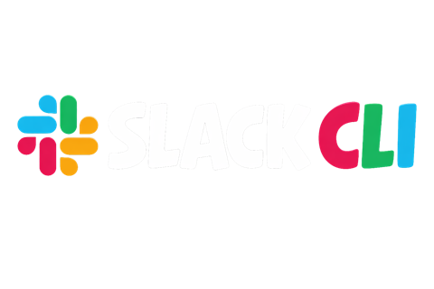

Slack CLI
Install the bundled CLI, then paste a Slack user token. The app saves it in a Slack-compatible format and verifies it with a live `auth test`.
InstallNot installed
AuthToken required
Live checkNot run
Slack CLI is not installed yet.